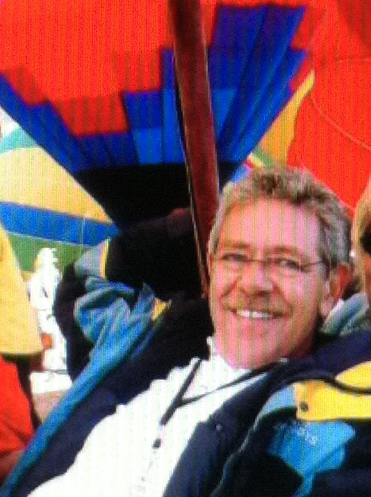
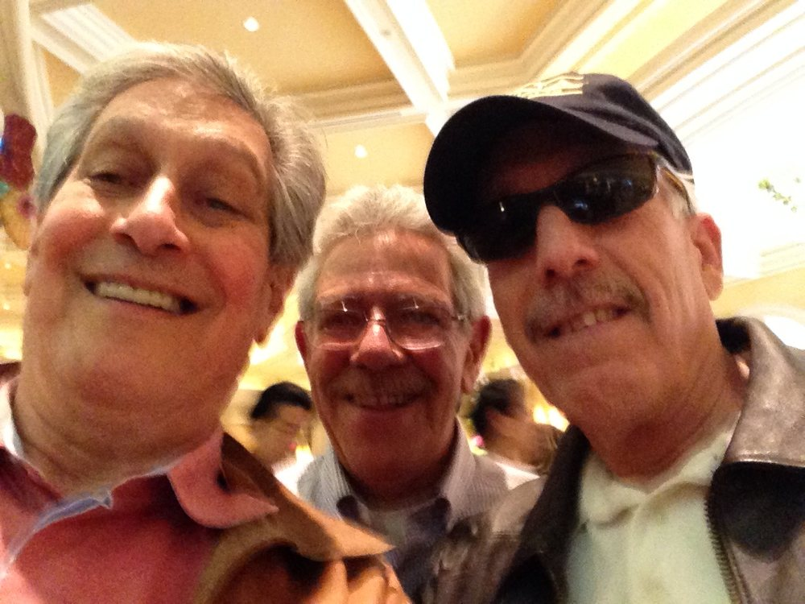
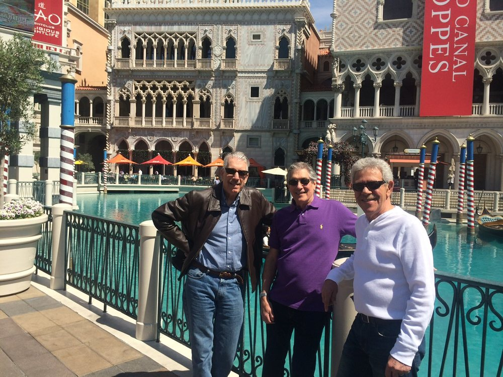

In loving memory of
David Providence
December 26, 1943 – June 21, 2026

Celebration of Life
Please join us to celebrate a life well lived.
Saturday, October 17, 2026 5:00 – 9:00 PM
We'll be serving food & drinks. Please bring your favorite stories and memories to share.
RSVP
RSVP by Emailor text (718) 753-7963
Location
Arapahoe Ridge Neighborhood Clubhouse
1750 Powell St
Erie, CO 80516
Suggested Hotels
Best Western Firestone Inn & Suites
Longmont, CO
Omni Interlocken Hotel
Broomfield, CO
Share a Memory
Share a MemoryFrom Alan Janoff
I must tell you David and I used to talk almost every day and I miss him. I think about him constantly. Two summers ago I flew in to Trenton to spend a few days with David. I got cheesesteaks and Philadelphia brought them to Trenton and then we went to Atlantic City for a couple days. It was a wonderful time together. My love to all, Alan.
From Alan Janoff

This is a photo of Dave when we went to an event with him and Colorado Springs years ago.
From Alan Janoff


These are pictures of David, Tom and I when the three of us met up in Las Vegas. Fun trip.
From Andie Redwine
The first time I met Dave Providence, I was spending the night with my new friend, Christina. It was the summer between 7th and 8th grade, and Dave was glued to a Wimbledon match on television. My dad watched football, basketball, and baseball, so a father enthusiastically embracing women's tennis was completely novel to me.
To beat the Muncie heat, Christina and I decided to stay indoors and play Monopoly in the loft above the family room. We could hear Dave talking to the TV downstairs, and he could certainly hear us.
The Providences had a great dog - a collie named Cindy - who provided Dave companionship as he watched Martina Navratilova take on Steffi Graf. I can't remember which player Dave was rooting for, but he was certainly animated, providing play by plays to Cindy, who gave her rapt attention to Dave's commentary and likely the snacks he was munching.
Christina and I grew bored with Monopoly, and we were trying to decide who won the game so we could end it. The discussion wasn't exactly heated between us, but it was emphatic. One of us may have been wrong, but neither of us was confused.
Pretty soon, we heard a shift in Dave's commentary: "You know, Cindy…I have Boardwalk…but you have Park Place with a hotel…but then I have all of the green sections…but you have more cash…I don't know, Cindy…"
And then Dave made fun of us with a one-liner I've borrowed and used since I was 13 years old:
"You know, Cindy? The stakes truly have never been lower."
Dave and Cheryl were fully present for all of Christina and Nikki's friends through adolescence — orchestra concerts, plays, our first driving experiences, ill-advised romances gone horribly wrong, and fantastic New Year's Eve parties that made me feel like I belonged and mattered.
He had two nicknames for me: Andie Panda and Rossovino - both of which would just come out of his mouth as pronouncements at random times and make me giggle. I'm even giggling as I write this.
I learned a few things from Dave. First, anything seemingly ordinary can bring joy. A 3D poster you have to sort of cross your eyes at to really see. Cranberry topping on a ginger cheesecake. Most recently, a play by play of the deck building at the family home in Colorado. Fantastic. Secondly, everyone should have a place at the table. My family didn't celebrate Christmas, but I wanted to as a kid - and the Providences made sure I had a place in their celebration. Thirdly, I learned to try things - even repair work I have no business doing. Finally, I learned how to put people at ease, especially myself. Because even if you make a mistake and fail? The stakes truly have never been lower.
I'm so glad we had you, Dave. Christina, Nikki, and Cheryl? Thank you for sharing him with us. I'm going to toast him with a little brandy this evening because it evaporates in your mouth. If you know, you know.